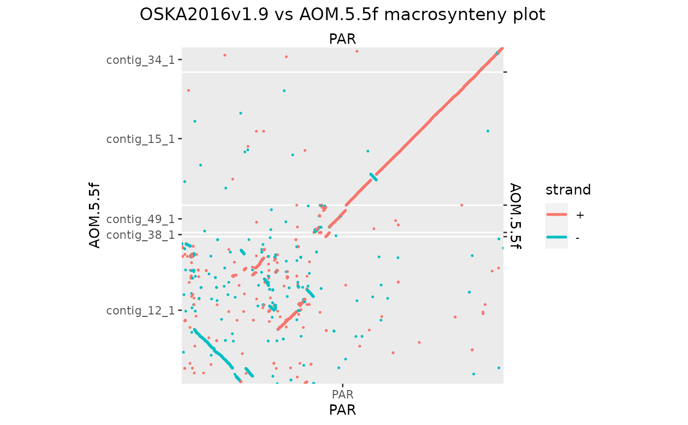
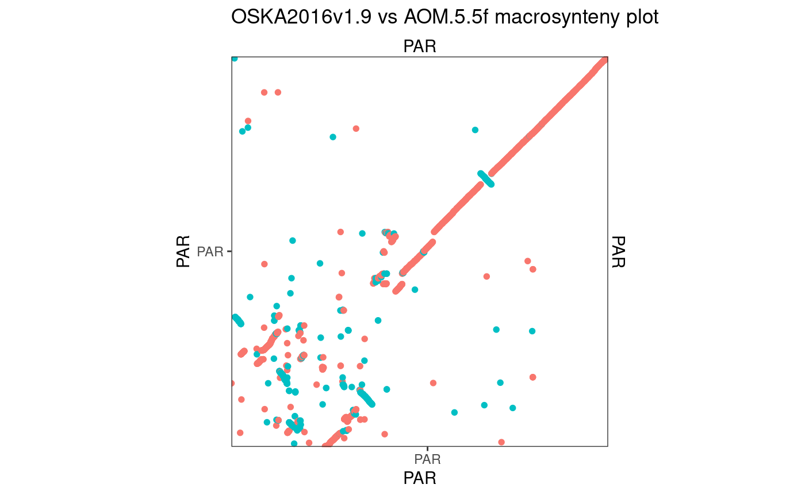
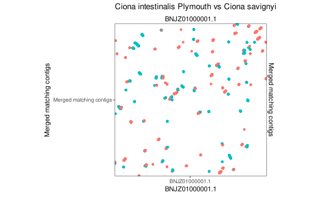
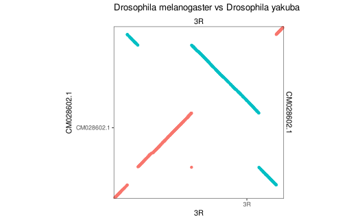

Alignment line plots, 10×10 Mbp windows
Charles Plessy
13 October, 2023
Source:vignettes/SquareWindowPlots.Rmd
SquareWindowPlots.Rmd
knitr::opts_knit$set(cache = TRUE)Introduction
This vignette produces alignment line plots of 10 × 10 Mbp windows in pairs of genomes to illustrate differences in the extent of scrambling in Oikopleura compared to equivalent pairs in other genera. The size of the windows is fixed to allow comparison at the same scale. To avoid arbitrary choices, the windows are placed at the centre of the largest pair of homologous chromosomes (or arms, in case of Drosophila).
Figure 7 alignment panels were generated in this vignette. They are presented on white background.
Extra alignments on grey background show how the non-chromosomal assemblies were scaffolded by hand in the region selected for the window plot.
Setup
Load R pacakges and data
library('OikScrambling') |> suppressPackageStartupMessages()
genomes <- OikScrambling:::loadAllGenomes()## Warning in runHook(".onLoad", env, package.lib, package): input string
## 'Génoscope' cannot be translated from 'ANSI_X3.4-1968' to UTF-8, but is valid
## UTF-8
## Warning in runHook(".onLoad", env, package.lib, package): input string
## 'Génoscope' cannot be translated from 'ANSI_X3.4-1968' to UTF-8, but is valid
## UTF-8
load("BreakPoints.Rdata")Define custom function
The mkOxPlotWindow function searches for the longest
sequence features (chromosomes, scaffolds, …) in each genome
and selects a 10 × 10 window centered at their midpoints.
mkOxPlotWindow <- function(gb, win = 5e6, size = 2, centre = c('midpoint', 'maxwidth'), ...) {
centre <- match.arg(centre)
seqlevels(gb) <- seqlevelsInUse(gb)
gb <- forceSeqLengths(gb)
longest_target_seq <- seqlengths(gb) |> sort() |> tail(1) |> names()
best_query_match <- gb[seqnames(gb) == longest_target_seq]$query |> seqnames() |> table() |> sort() |> tail(1) |> names()
if (centre == 'midpoint') {
target_centre <- round(seqlengths(gb)[longest_target_seq] / 2)
query_centre <- round(seqlengths(gb$query)[best_query_match] / 2)
} else {
gb_coa <- coalesce_contigs(gb)
maxwidth <- which.max(width(gb_coa))
target_centre <- gb_coa[maxwidth] |> resize(1, fix = "center") |> start()
query_centre <- gb_coa$query[maxwidth] |> resize(1, fix = "center") |> start()
}
gb <- gb |> plyranges::filter(
seqnames == longest_target_seq,
seqnames(query) == best_query_match,
start > target_centre - win,
end < target_centre + win,
start(query) > query_centre - win,
end(query) < query_centre + win
)
# score(gb) <- stringDist_GBreaks(gb) / width(gb)
makeOxfordPlots(gb, col = "strand", size = size, ...) +
theme_bw() +
theme(legend.position="none")
}Oikopleura
Osaka vs Aomori
94.45642 % matches / alignment length
The Aomori genome needs some custom scaffolding to make a contiguous 10 × 10 region.
Osa_Aom_PAR <- gbs$Osa_Aom |> plyranges::filter(seqnames == "PAR")
seqlevels(Osa_Aom_PAR) <- seqlevelsInUse(Osa_Aom_PAR)
seqlevels(Osa_Aom_PAR$query) <- seqlevelsInUse(Osa_Aom_PAR$query)
makeOxfordPlots(Osa_Aom_PAR)
# Let's remove the contigs that have their main match elsewhere.
QTcoverage <- function(gb) {
stopifnot (length(seqlevels(gb)) == 1) # Not ready for full objects
stopifnot (!any(is.na(seqlengths(gb$query))))
grl <- split(gb, seqnames(gb$query))
lapply(grl, \(gb) sum(width(gb$query))) |> unlist() / seqlengths(gb$query)
}
Osa_Aom_PAR[seqnames(Osa_Aom_PAR$query) %in% seqlevels(Osa_Aom_PAR$query)[QTcoverage(Osa_Aom_PAR) < 0.5]] <- NULL
seqlevels(Osa_Aom_PAR$query) <- seqlevelsInUse(Osa_Aom_PAR$query)
makeOxfordPlots(Osa_Aom_PAR)
# Let's remove the smallest ones that barely display on one pixel
seqlengths(Osa_Aom_PAR$query)## contig_12_1 contig_15_1 contig_34_1 contig_38_1 contig_49_1
## 7097394 6419763 1209792 203373 1316631
Osa_Aom_PAR[seqnames(Osa_Aom_PAR$query) %in% seqlevels(Osa_Aom_PAR$query)[seqlengths(Osa_Aom_PAR$query) < 2e4]] <- NULL
seqlevels(Osa_Aom_PAR$query) <- seqlevelsInUse(Osa_Aom_PAR$query)
makeOxfordPlots(Osa_Aom_PAR, col = "strand")
# And now let's flip by hand the ones that need
grl <- split(Osa_Aom_PAR, seqnames(Osa_Aom_PAR$query))
grl[["contig_38_1"]] <- reverse(grl[["contig_38_1"]], query = TRUE)
grl[["contig_49_1"]] <- reverse(grl[["contig_49_1"]], query = TRUE)
Osa_Aom_PAR <- unlist(grl)
makeOxfordPlots(Osa_Aom_PAR, col = "strand")
# Finally, let's reorder and merge remaining seqlevels
seqlevels(Osa_Aom_PAR$query) <- seqlevels(Osa_Aom_PAR$query)[orderQuerySeqLevels(Osa_Aom_PAR)]
Osa_Aom_PAR$query <- mergeSeqLevels(Osa_Aom_PAR$query, seqlevels(Osa_Aom_PAR$query), "PAR")
mkOxPlotWindow(Osa_Aom_PAR)
Okinawa vs Kume
94.23956 % matches / alignment length
Same for the Kume genome…
Oki_Kum_PAR <- gbs$Oki_Kum |> plyranges::filter(seqnames == "PAR")
seqlevels(Oki_Kum_PAR) <- seqlevelsInUse(Oki_Kum_PAR)
seqlevels(Oki_Kum_PAR$query) <- seqlevelsInUse(Oki_Kum_PAR$query)
makeOxfordPlots(Oki_Kum_PAR)
# Let's remove the contigs that have their main match elsewhere.
QTcoverage <- function(gb) {
stopifnot (length(seqlevels(gb)) == 1) # Not ready for full objects
stopifnot (!any(is.na(seqlengths(gb$query))))
grl <- split(gb, seqnames(gb$query))
lapply(grl, \(gb) sum(width(gb$query))) |> unlist() / seqlengths(gb$query)
}
Oki_Kum_PAR[seqnames(Oki_Kum_PAR$query) %in% seqlevels(Oki_Kum_PAR$query)[QTcoverage(Oki_Kum_PAR) < 0.5]] <- NULL
seqlevels(Oki_Kum_PAR$query) <- seqlevelsInUse(Oki_Kum_PAR$query)
makeOxfordPlots(Oki_Kum_PAR)
# Let's remove the smallest ones that barely display on one pixel
seqlengths(Oki_Kum_PAR$query)## contig_12_1 contig_13_1 contig_18_1 contig_28_1 contig_38_1 contig_41_1
## 2357322 793615 832 6415228 61242 2611992
## contig_43_1 contig_61_1 contig_72_1 contig_82_1 contig_85_1 contig_89_1
## 841236 17591 84743 2322619 428051 241503
## contig_91_1
## 126775
Oki_Kum_PAR[seqnames(Oki_Kum_PAR$query) %in% seqlevels(Oki_Kum_PAR$query)[seqlengths(Oki_Kum_PAR$query) < 2e4]] <- NULL
seqlevels(Oki_Kum_PAR$query) <- seqlevelsInUse(Oki_Kum_PAR$query)
makeOxfordPlots(Oki_Kum_PAR)
# And now let's flip by hand the ones that need
grl <- split(Oki_Kum_PAR, seqnames(Oki_Kum_PAR$query))
grl[["contig_12_1"]] <- reverse(grl[["contig_12_1"]], query = TRUE)
grl[["contig_43_1"]] <- reverse(grl[["contig_43_1"]], query = TRUE)
Oki_Kum_PAR <- unlist(grl)
makeOxfordPlots(Oki_Kum_PAR)
# Finally, let's reorder and merge remaining seqlevels
seqlevels(Oki_Kum_PAR$query) <- seqlevels(Oki_Kum_PAR$query)[orderQuerySeqLevels(Oki_Kum_PAR)]
Oki_Kum_PAR$query <- mergeSeqLevels(Oki_Kum_PAR$query, seqlevels(Oki_Kum_PAR$query), "PAR")
mkOxPlotWindow(Oki_Kum_PAR)Ciona
Ciona intestinalis (Plymouth vs Roscoff)
mkOxPlotWindow(gbs$Ply_Ros) + ggtitle("Ciona intestinalis Plymouth vs Roscoff")Ciona intestinalis (Plymouth) vs Ciona robusta
mkOxPlotWindow(gbs$Ply_Rob) + ggtitle("Ciona intestinalis Plymouth vs Ciona robusta")Ciona intestinalis (Plymouth) vs Ciona savignyi
Here again we need some custom scaffolding.
Ply_Sav_chr1 <- gbs$Ply_Sav |> plyranges::filter(seqnames == "BNJZ01000001.1")
seqlevels(Ply_Sav_chr1) <- seqlevelsInUse(Ply_Sav_chr1)
seqlevels(Ply_Sav_chr1$query) <- seqlevelsInUse(Ply_Sav_chr1$query)
Ply_Sav_chr1$query <- forceSeqLengths(Ply_Sav_chr1$query)
makeOxfordPlots(Ply_Sav_chr1)
# Let's remove the contigs that have their main match elsewhere.
QTcoverage <- function(gb) {
stopifnot (length(seqlevels(gb)) == 1) # Not ready for full objects
stopifnot (!any(is.na(seqlengths(gb$query))))
grl <- split(gb, seqnames(gb$query))
lapply(grl, \(gb) sum(width(gb$query))) |> unlist() / seqlengths(gb$query)
}
Ply_Sav_chr1[seqnames(Ply_Sav_chr1$query) %in% seqlevels(Ply_Sav_chr1$query)[QTcoverage(Ply_Sav_chr1) < 0.05]] <- NULL
seqlevels(Ply_Sav_chr1$query) <- seqlevelsInUse(Ply_Sav_chr1$query)
makeOxfordPlots(Ply_Sav_chr1)
# Let's remove the smallest ones that barely display on one pixel
seqlengths(Ply_Sav_chr1$query)## R1063 R113 R1167 R1383 R14 R1490 R1596 R162 R173 R1779
## 24606 277504 10138 7422 1702960 3223 8495 276690 455223 32296
## R1942 R2368 R2407 R2517 R268 R27 R281 R2872 R30 R31
## 10471 6428 9904 5720 550239 2366314 114725 8506 3493700 766944
## R347 R352 R417 R489 R491 R5 R51 R62 R64 R650
## 180004 46220 61968 180871 28116 2728683 1639093 608627 540266 23432
## R767 R98
## 42085 434095
Ply_Sav_chr1[seqnames(Ply_Sav_chr1$query) %in% seqlevels(Ply_Sav_chr1$query)[seqlengths(Ply_Sav_chr1$query) < 2e4]] <- NULL
seqlevels(Ply_Sav_chr1$query) <- seqlevelsInUse(Ply_Sav_chr1$query)
makeOxfordPlots(Ply_Sav_chr1)
# Finally, let's reorder and merge remaining seqlevels
seqlevels(Ply_Sav_chr1$query) <- seqlevels(Ply_Sav_chr1$query)[orderQuerySeqLevels(Ply_Sav_chr1)]
Ply_Sav_chr1$query <- mergeSeqLevels(Ply_Sav_chr1$query, seqlevels(Ply_Sav_chr1$query), "Merged matching contigs")
makeOxfordPlots(Ply_Sav_chr1)
mkOxPlotWindow(Ply_Sav_chr1) + ggtitle("Ciona intestinalis Plymouth vs Ciona savignyi")
Drosophila
Note that in some genomes, each chromosome arm is represented in a separate sequence.
D. melanogaster vs D. mauritania
# Force strand flipping for aesthetic purpose
mkOxPlotWindow(gbs$Dme_Dma |> forceSeqLengths() |> reverse()) + ggtitle("Drosophila melanogaster vs Drosophila mauritania")D. melanogaster vs D. yakuba
mkOxPlotWindow(gbs$Dme_Dya) + ggtitle("Drosophila melanogaster vs Drosophila yakuba")
D. melanogaster vs D. subpulchrella
On arm 3R there is a large unaligned region that causes the plot to not be squared. I think that the problem may be related to the presence of large centromere regions in the best assemblies.
mkOxPlotWindow(gbs$Dme_Dsu) + ggtitle("Drosophila melanogaster vs Drosophila subpulchrella")Blacklist 3R as the algorithm does not find an nicely square window on it.
D. melanogaster vs D. buskii
mkOxPlotWindow(gbs$Dme_Dbu) + ggtitle("Drosophila melanogaster vs Drosophila buskii")Mammals
Human versus mouse
Chromosome 18 was chosen because it is small and it has the same name in both species. Region was centered on the alignment with the longest width, as otherwise the window is out of target.
Still, most of the region is not aligned. The syntenic regions only look contiguous because the dots need to be thick to be easy to see.
hgmm <- load_genomic_breaks(system.file("extdata/hg38_mm10/hg38_chr18__mm10_chr18.gff3", package = "BreakpointsData"))
mkOxPlotWindow(hgmm, centre = 'maxwidth') + ggtitle("Homo sapiens vs Mus musculus")## Warning in min(x): no non-missing arguments to min; returning Inf## Warning in max(x): no non-missing arguments to max; returning -Inf## Warning in min(x): no non-missing arguments to min; returning Inf## Warning in max(x): no non-missing arguments to max; returning -InfMuntjaks
Mmun_Mree <- load_genomic_breaks(system.file("extdata/Muntjaks/Rrev_Rmun.07.postmasked.gff.gz", package = "BreakpointsData"), type = "match")
# Given the enormous differences of karyotype, the M. reevesi chromosomes need to be trimmed for #
# the window centering alorithm to function.
Mmun_Mree.trim <- Mmun_Mree |> plyranges::filter(seqnames == "CM018478.1", seqnames(query) == "CM018501.1", end(query) < 273507479)
mkOxPlotWindow(Mmun_Mree.trim, centre = 'maxwidth') + ggtitle("Muntiacus muntjak vs M. reevesi (95% aligned, 98% identical).")## Warning in min(x): no non-missing arguments to min; returning Inf## Warning in max(x): no non-missing arguments to max; returning -Inf## Warning in min(x): no non-missing arguments to min; returning Inf## Warning in max(x): no non-missing arguments to max; returning -InfNematodes
Caenorhabditis briggsae and C. elegans are hermaphrodites, so let’s avoid using them as target genomes.
But C. briggsae is closest to C. nigoni so we need it once as a query genome.
C. nigoni vs C. briggsae
C. nigoni genome assembly GCA_027920645.1
length: 128,508,886. It has no unplaced contigs nor mitochondrial
genome.
C. briggsae’s genome assmebly GCA_022453885.1
length is 106,953,292, with mitochondrial genome as I forgot to remove
it.
mkOxPlotWindow(gbs$Cni_Cbr, centre = 'maxwidth') + ggtitle("Caenorhabditis nigoni vs C. briggsae (61% aligned, 85% identity)")
mkOxPlotWindow(gbs$Cbr_Cni, centre = 'maxwidth') + ggtitle("Caenorhabditis briggsae vs C. nigoni (69% aligned, 85% identity)")C. nigoni or briggsae vs C. remanei
Unplaced contigs and mitochondrial genome were removed from C.
remanei’s assembly GCA_001643735.4.
mkOxPlotWindow(gbs$Cni_Cre, centre = 'maxwidth') + ggtitle("Caenorhabditis nigoni vs C. remanei (25% aligned, 73% identity)")## Warning in min(x): no non-missing arguments to min; returning Inf## Warning in max(x): no non-missing arguments to max; returning -Inf
mkOxPlotWindow(gbs$Cbr_Cre, centre = 'maxwidth') + ggtitle("Caenorhabditis briggsae vs C. remanei (30% aligned, 72% identity)")## Warning in min(x): no non-missing arguments to min; returning Inf## Warning in max(x): no non-missing arguments to max; returning -InfC. nigoni vs C. inopinata
mkOxPlotWindow(gbs$Cni_Cin, centre = 'maxwidth') + ggtitle("Caenorhabditis nigoni vs C. inopinata (16% aligned, 72% identity)")## Warning in min(x): no non-missing arguments to min; returning Inf## Warning in max(x): no non-missing arguments to max; returning -Inf_C. briggsae vs C. elegans
mkOxPlotWindow(gbs$Cbr_Cel, centre = 'maxwidth') + ggtitle("Caenorhabditis briggsae vs C. elegans (23% aligned, 72% identity)")## Warning in min(x): no non-missing arguments to min; returning Inf## Warning in max(x): no non-missing arguments to max; returning -Inf## Warning in min(x): no non-missing arguments to min; returning Inf## Warning in max(x): no non-missing arguments to max; returning -Inf